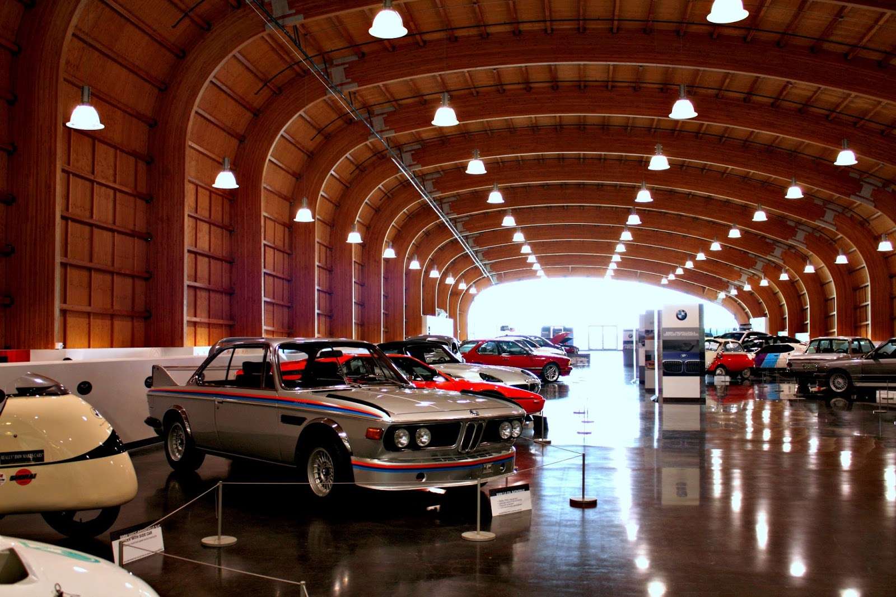

Tacoma is located within Pierce County, Washington as a port city alongside the Puget Sound. It is the second largest city within the Puget Sound area, and third most populous city in the state, and it servers Washington as a center of various business activity for the South Sound region. The residents of Tacoma adopted its name after Mount Rainer where in the Puget Sound Salish dialect, in its anglicized version is called "Takhoma".
A local nickname for the state is the "City of Density", this name derived during the period where it was chosen to be the western terminus for the Northern Pacific Railroad in the late 19th century. This was to connect its neighboring deep-water harbor, Commencement Bay. This would also influence the city's motto, "When rails meet sails" after this connection was made between the railroad and harbor. The Commencement Bay also serves the Port of Tacoma which is a center for international trade in the Pacific Coast. Another event the city is known for is in 1940, there was the collapse of the Tacoma Narrows Bridge, which later earned the nickname "Galloping Gertie". This was found to be caused by the vertical movements of t he deck during high wind conditions.
Like most of cities in Washington, Tacoma was first inhabited by Native Americans for thousands of years until the early exploration of Europeans occurred. In 1852, a Swede named Nicolas Delin came upon the Tacoma area and he built a local water-powered sawmill on the creek near Commencement Bay, the settlement has grown over a few years, but it was later abandoned during the Indian War in 1855-56. Later in 1864, a Civil War veteran named Job Carr built a cabin hoping to earn some profit from the selection of Commencement Bay as a terminus of the Transcontinental Railroad. He soon sold his share to a developer named Morton McCarver and he then named it "Project Tacoma" after its indigenous name for the mountain. Following the event of the town being selected for the Northern Pacific Railroad in 1873, McCarver and Tacoma's future mayor John Sprague lobbied with others within the town and Tacoma was incorporated in 1875.
If you are visiting Tacoma anytime soon, be sure to see the sights within the city and Pierce County. Below are just a few of the places you can go and also enjoy with your family. You can find more following this link here.
| Outdoor | Family Fun | ||
|---|---|---|---|
| Fort Nisqually Living History | Museum of Glass | ||
| W.W. Seymour Botanical Conservatory | LeMay - America's Car Museum |  | |
| Point Defiance Park | Point Defiance Zoo & Aquarium | ||